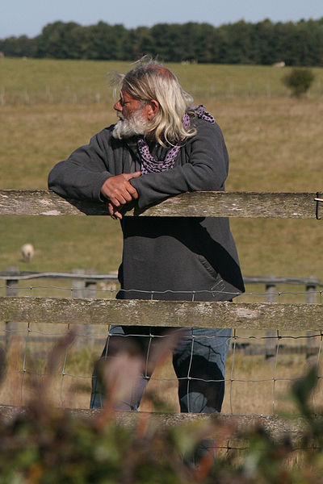
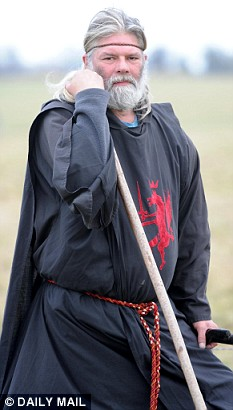
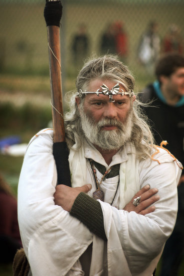

| Acasă | Scurt istoric | Galerie foto | Bibliografie | Date de contact |
| Cavalerii Mesei Rotunde |
| Excalibur |
| Merlin |
| Regele Arthur |
| Guinevere şi Lancelot |
| Mordred |
| Regele Arthur în lumea modernă |
| Falsul rege Arthur |
| Dovezi ale existenţei sale |
Mitul reincarnarii lui Arthur nu a fost lipsit de succes si a castigat multi sustinatori de-a lungul anilor. Unii insa au fost atat de pasionati incat au inceput sa aiba convingerea ca ei insisi sunt reincarnarea regelui Arthur. Vorbim bineinteles despre John Timothy Rothwell (5 April 1954) sau Arthur Uther Pendragon, cum el insusi se intituleaza. Aprig sustinator al drepturilor omului, John a luptat pentru ca neo-druizii sa isi pastreze drepturile de a-si venera zeii in zona Stonehenge. Ideea conform careia ar fi reincarnarea reglui Arthur a pornit in momentul in care a citit o carte scrisa de Gareth Knight pe tema perioadei arthuriene. Atunci John a observat numeroasele asemanari dintre el si legendarul rege, devenind astfel convins ca este reintruparea eroului de mult apus. Desi a incalcat de foarte multe ori legea si a fost arestat ca si consecinta, John a ramas loial credintei sale conform careia spiritul lui Arthur ii guverneaza trupul. |
|  |  |
 |